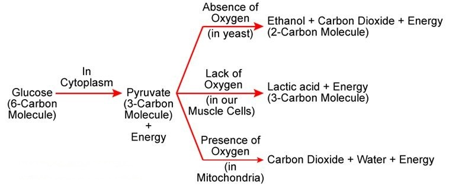
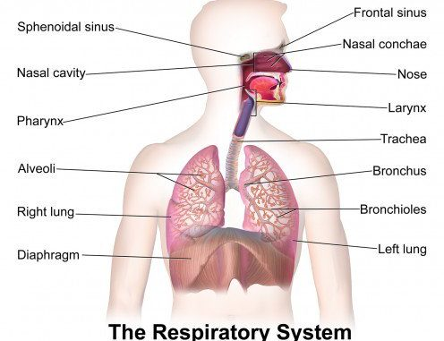

Respiration - The process in which cells of an organism obtain energy by combining oxygen and glucose is called respiration (It involves breathing).
Anaerobic Respiration - It is the process of producing energy in the presence of oxygen.
Aerobic Respiration - It is the process of producing energy in the absence of oxygen or lack of oxygen.

The energy released during cellular respiration is used to synthesize a molecule called ATP (Adenosine Triphosphate).
Human Respiratory System - Oxygen-rich air is taken into the body through the nose. The air passes through the throat to the lungs.
In Lungs - The air passage divides into smaller and smaller tubes and finally reaches alveoli.
Alveoli - They are balloon-like structures that provide a surface for the exchange of gases. The walls of alveoli connect with blood vessels. Oxygen dissolves in hemoglobin from alveoli and is carried from the lungs to every cell in the body.

Gaseous exchange occurs in plants through stomata in leaves, lenticels in stems, and the surface of roots.
During respiration, plants absorb oxygen and use it with glucose to create carbon dioxide, water, and energy.
Glucose + O2 ==> CO2 + H2O + energy